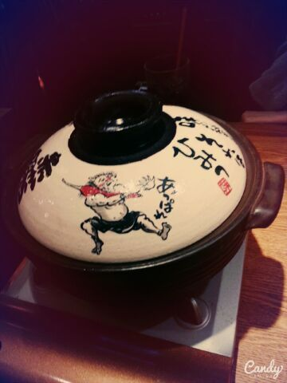

| 2014/08 26 Tue | 七瀬と赤カラ 〜Rotty 〜 名古屋盛りあがっていきまし ょう(。・ｘ・)ゞ♪ |
おはようございますヽ(・∀・)ノ.♪
ろってぃーです..*
〜真夏の全国ツアー 仙台〜
ありがとうございました！！！
liveの時はいつも ろってぃー推しさんの方をすぐ発見するんだけど、 仙台は ろってぃ-推しさん、1番多く感じたんだ (*´ω｀*)
来てくださったファンの皆様ありがとうございました。あっという間の１日で、本当に楽しかったです(#^.^#)
それに、仙台のlive中に なんか視線感じるな〜. と思ってたら、隣に居るさゆにゃんが まひろの目を見て『ろってぃーの目きれいだねぇ..*』って言ってくれました

嬉しかったなぁ〜... って話です..*
昨日は 七瀬と夕方 お鍋食べに行ってきました///

めっちゃ美味しかった〜(。・ｘ・)ゞ♪
また、仕事終わりとかに行こうな〜ん。
その後 必要なもの買いに行ったりしました。
ってことで、
今日は 真夏の全国ツアー 〜名古屋〜です！！！
楽しんでいきましょう！！！！！
ろってぃーのこと見て帰ってね

のし..*
コメント(257)
2014/08/26 07:06